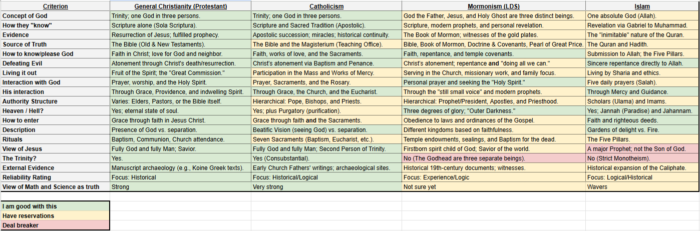

I've been talking pretty regularly with Mormon missionaries for a couple of months now — they come by at least once or twice a week, and I've visited their church too. I've done this before, years ago; I talked with a Mormon neighbor in my college dorm at least once a week for over a year, and he eventually came to Christ alone for his salvation and we started attending church together. That process was hard on me at the time, especially once the Bishops got involved in our conversations, and if I'm honest, part of why I keep opening the door to these new missionaries now is simply that I'm lonely. I know some of you want to point me to 2 John 1:10–11 about not welcoming false teachers into your house. I hear it. But give me some grace here.
What still fascinates me is how, on a surface checklist, Mormon core beliefs can look almost identical to ours — something close to the Apostles' Creed — until you get into what those same words actually mean underneath. That gap between shared vocabulary and different meaning is where most of these conversations eventually land.
To sort through it more carefully, I built a comparison chart across several traditions — general Christianity, Catholicism, Mormonism, and Islam — against about eighteen criteria I actually care about theologically, color-coded by how serious the disagreement is.

Building that chart clarified something for me. Most of the surface-level checklist items — belief in God, belief in Jesus, belief in the Bible — can look like agreement. The real fault lines show up underneath: who God actually is (one eternal being vs. an exalted man who became a god), whether salvation is by grace alone or requires ongoing works and ordinances, whether Scripture is closed or supplemented by later revelation. Those aren't disagreements about emphasis. They're disagreements about which God is actually being worshiped.
I sent a version of this summary to the missionaries this morning, mostly so they'd know where my thinking actually stands before we sit down to talk through it, since we're probably down to two more meetings before they move on to whatever comes next in their process. I don't expect it to change much on its own. But I'd rather they know exactly where I disagree and why than have us talk past each other for another month.